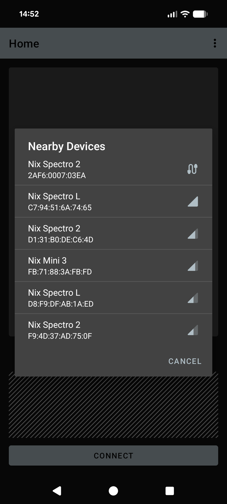

Frequently Asked Questions
This section includes tips on how to troubleshoot common issues that may be encountered when implementing the NixUniversalSDK into your Android application.
Compatibility
- Does the
NixUniversalSDKwork on Android virtual devices?- No, Android virtual devices do not bridge Bluetooth LE from the host PC to the AVD.
- Applications that use
NixUniversalSDKwill run in virtual devices, but Nix device operations will be unavailable. - You can continue to use AVDs for general app development and testing, but real Android devices with Bluetooth are required to test Nix device integration.
- Does the
NixUniversalSDKwork inside the Windows Subsystem for Android (WSA)?- No, WSA does not bridge Bluetooth LE between the host PC and the Android subsystem.
- Applications that use
NixUniversalSDKwill run on WSA but Nix device operations will be unavailable.
License and activation issues
- The
DeviceScannercannot start and is indicating anDeviceScannerState/ERROR_LICENSEstate. How do I resolve this?- Check the license manager state via
LicenseManager.Shared.state. This will be one of the entries in theLicenseManagerStateenum which will describe the problem. - Activate the license manager by calling
LicenseManager.Shared.activate()and ensure that its state isLicenseManagerState/ACTIVEbefore initializing theDeviceScanner.
- Check the license manager state via
- My license is active, but Nix devices immediately disconnect with an
DeviceStatus/ERROR_UNAUTHORIZEDstatus.- Depending on license conditions, the
NixUniversalSDKmay require periodic internet access to check if a device is authorized by the active license. - If set by the license, internet connections are required:
- On the first connection of a particular device serial number.
- At least once per 30 day period thereafter.
- If you are behind a firewall, white-list access to https://nixsensor.com/nixserial to ensure that the server can be reached.
- If your license includes provisions for private-labelled devices, these devices may be exempted from this requirement.
- Please contact us via e-mail at sdk@nixsensor.com if alternate license arrangements are required.
- Depending on license conditions, the
User permissions
- Why are location permissions listed in the manifest? Does the Nix device track users' location?
- No, Nix devices to not track users' location.
- Prior to Android API level 31, Bluetooth scanning operations required access to location, since some BLE beacons could be used to derive user location
- For Android API level 31 and later, the
NixUniversalSDKdeclares that it never derives location from Bluetooth scan results usually does not require location access.
- No, Nix devices to not track users' location.
- Which permissions do I need to request at runtime?
- The list of permissions depends on the specific Android version. The
IDeviceScannerinterface includes helpers to streamline the permission requests. - See Requesting User Permissions for further details.
- The list of permissions depends on the specific Android version. The
- Why are different permissions now required when running inside a managed profile (e.g. - Android work profile)?
- Our testing has found that location permissions are still sometimes needed when running in a managed profile.
- This is despite the
NixUniversalSDKstrongly asserting that it does not derive location from Bluetooth scan results. - As a workaround,
IDeviceScanner/requiredBluetoothPermissionscurrently includes location permissions if it determines that it is running within a managed profile.
Device discovery and connection
- Can a single Nix device be connected to more than one application at a time?
- No, a Nix device can only communicate with a single application running on a single host at any given time.
- Can I open a connection to multiple Nix devices simultaneously inside the same application?
- No, the
NixUniversalSDKis configured to work with a single device at a time.
- No, the
- How long should I run the
DeviceScannerfor when discovering nearby devices?- When discovering Nix devices over Bluetooth, the default 20-second search period is recommended.
- If you wish to use a shorter period, at least 10 seconds is highly suggested.
- Nix devices advertise their presence once per second, but some advertisement packets may be missed due to other Bluetooth traffic. The default 20-second period allows multiple advertisement to be reliably received.
- When discovering Nix devices over Bluetooth, the default 20-second search period is recommended.
- Can I connect to a Nix device attached to my Android phone or tablet with a USB cable instead of Bluetooth?
- USB attached communication is possible if:
- The optional dependency
usb-serial-for-androidis included in your project as described here. - The Android host device supports USB OTG (on-the-go). Most phones or tablets with a USB-C port support this natively, while older phones with a micro-USB connector may require a separate USB OTG adapter.
- The optional dependency
- The
DeviceScannerwill search for USB attached devices once each time that it is started. - USB devices are reported via
OnDeviceFoundListenerin the same manner as nearby Bluetooth devices as described here.
- USB attached communication is possible if:
- The device scanner found more than one device. How should I handle multiple nearby devices?
- It is best practice to show a list of nearby devices in your UI sorted by signal strength (RSSI). Including the device name and ID also helps the user distinguish between devices.
- Note that RSSI is a negative number and ranges from 0 (strongest) to -128 (weakest). Show the strongest signal devices at the top of the list.
- You should prompt your user to bring their Nix device closer to their Android phone or tablet when searching over Bluetooth. This will increase the signal strength of their device relative to other nearby Nix devices.
- It is best practice to show a list of nearby devices in your UI sorted by signal strength (RSSI). Including the device name and ID also helps the user distinguish between devices.
- How should signal strength (RSSI) by used?
- RSSI indicates relative signal strength and ranges from 0 (strongest) to -128 (weakest). When sorting a list of devices by RSSI, sort in descending order (i.e. - show the values closer to 0 at the top of the list).
- Note that USB devices always report an RSSI of '0'. You can and should distinguish between USB and Bluetooth devices in any displayed device list. The IDeviceCompat/interfaceType property allows you to distinguish between the two.
- Rather than displaying the RSSI value directly, consider showing it with signal strength icons, as shown in the demo application.

RSSI sorting screenshot
- My USB attached Nix device is not recognized or listed by the SDK.
- Ensure that the optional dependencies required for USB support are included. Refer to Add dependencies for USB support for further details.
- A error message will appear in the logcat messages if the dependency is missing.
- Check that the Android device supports USB OTG and that the Nix device is connected to the correct USB port.
- Ensure that the optional dependencies required for USB support are included. Refer to Add dependencies for USB support for further details.
- The device scanner is running, but no nearby Nix devices are found.
- For USB attached devices, complete the troubleshooting steps listed above in item #7.
- For Bluetooth devices:
- Ensure that the Nix device is charged.
- Ensure that it is not actively connected to another application (see item #1). If in doubt, connecting the Nix device to a charger will reset any active connections.
- If the application is running inside a managed profile (e.g. - Android work profile), ensure that location services are enabled for that profile and location permissions have been granted by the user.
Other
- Can I rename the Nix device?
- The device name is fixed in the device firmware and cannot be changed.
- Can I assign a nickname to a particular device?
- For Bluetooth devices, the device ID represents a hardware address. Since this is visible during the device search, this can be used by your application to tag or nickname individual devices during a device search or re-connection.
- Note that the ID for USB attached devices is not unique and cannot be used for nicknaming purposes.
- Once connected, the device serial number can be used to uniquely identify devices regardless of their connection interface.
- For Bluetooth devices, the device ID represents a hardware address. Since this is visible during the device search, this can be used by your application to tag or nickname individual devices during a device search or re-connection.
- Does the SDK provide access to any existing colour libraries (paint colours, PANTONE, RAL, NCS, etc.)?
- No, the
NixUniversalSDKdoes not provide any colour libraries. Creation and maintenance of colour libraries is the responsibility of the application creator or the application end-user. - When handling your own colour library data, the
ColorUtilsclass provides many helpful functions for manual colour conversions and delta E calculations (e.g. - for colour matching against a library).
- No, the
- Do you provide plugins for cross-platform frameworks (such as Unity, React Native, Flutter, Xamarin, Xojo, etc.)?
- Nix Sensor Ltd. does not provide ready-made plugins for these third-party frameworks.
- However, most third-party frameworks provide methods to 'bridge' or 'wrap' platform specific libraries. In most cases, it is possible to use the
NixUniversalSDKwith some minor adjustments. - Some examples could include:
- Native Modules in React Native
- Binding a Java library in Xamarin
- Please contact us via e-mail at sdk@nixsensor.com if assistance is required.
Next steps
- Review the example app
- Get additional support